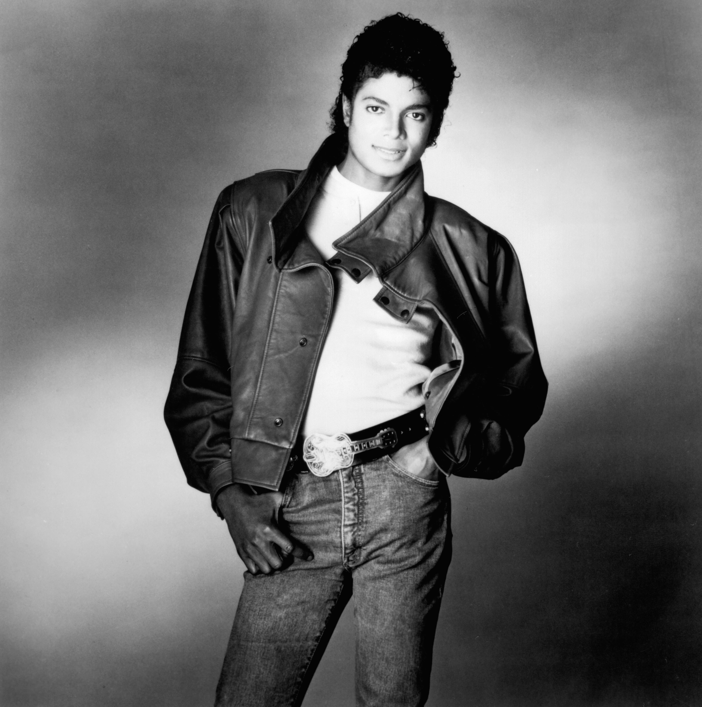
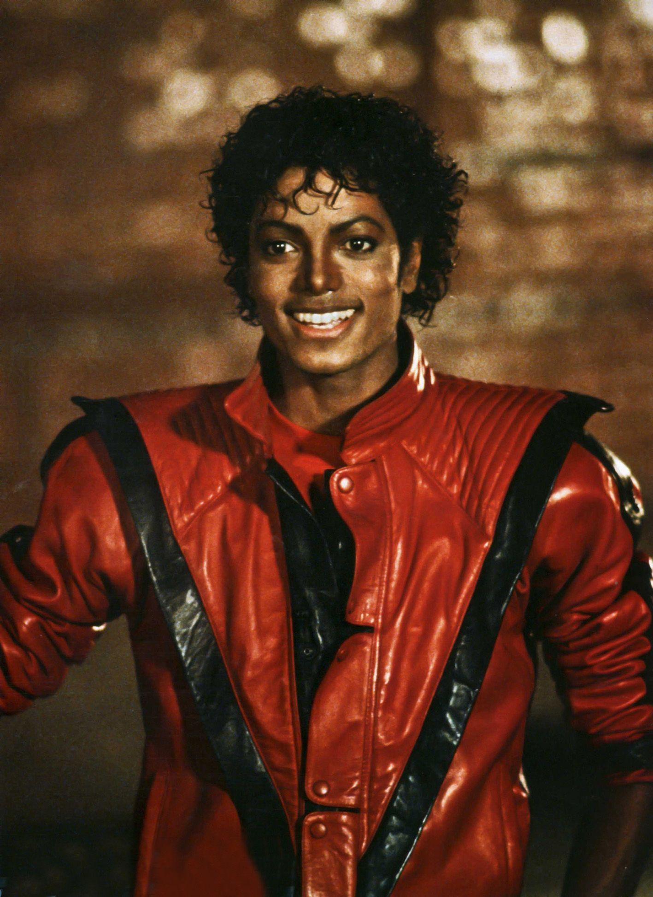
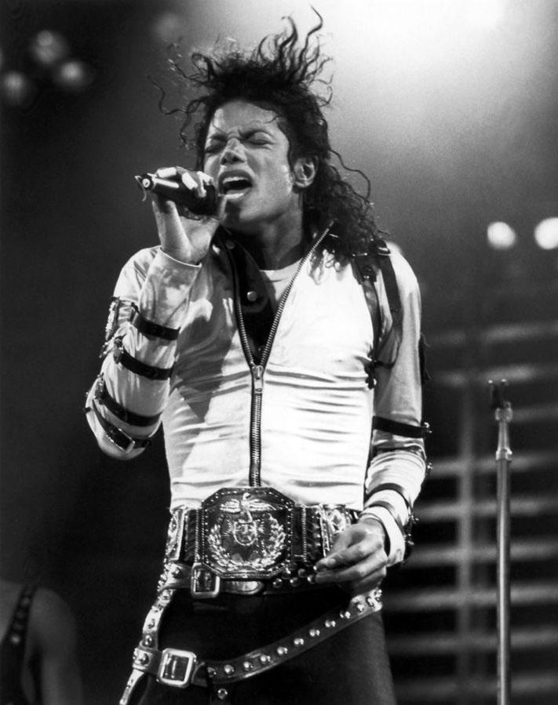
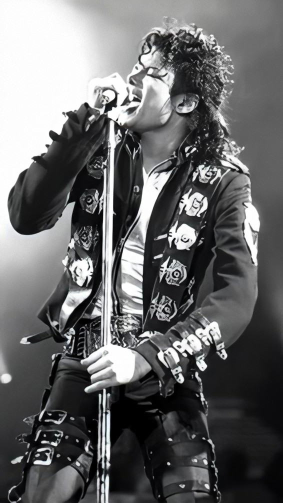
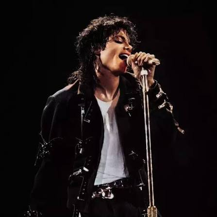

EL REY DEL POP
Una leyenda que revolucionó la música, el baile y los espectáculos a nivel mundial.
Conocer su historiaMichael Jackson fue un cantante, compositor, bailarín y productor estadounidense, conocido mundialmente como el Rey del Pop.
Nació el 29 de agosto de 1958 en Gary, Indiana, Estados Unidos. Comenzó su carrera musical durante su infancia como integrante del grupo Jackson 5.
Posteriormente desarrolló una exitosa carrera como solista. Sus álbumes Off the Wall, Thriller y Bad alcanzaron un enorme éxito internacional.
Su estilo innovador, sus coreografías y sus videos musicales transformaron la industria musical. Falleció el 25 de junio de 2009, pero su legado continúa vigente.
Nombre: Michael Joseph Jackson
País: Estados Unidos
Géneros: Pop, R&B, Soul y Funk
Inicio de carrera: 1964
Fecha de nacimiento: 29 de agosto de 1958
Apodo: El Rey del Pop
Algunos momentos de Michael Jackson.




Escucha algunas de las canciones más populares de Michael Jackson.
It's close to midnigh And something evil's lurking in the dark Under the moonlight You see a sight that almost stops your heart You try to scream But terror takes the sound before you make it You start to freeze As horror looks you right between the eyes You're paralyzed 'Cause this is thriller, thriller night And no one's gonna save you from the beast about to strike You know it's thriller, thriller night You're fighting for your life inside a killer, thriller tonight, yeah Ooh, ooh You hear the door slam And realize there's nowhere left to run You feel the cold hand And wonder if you'll ever see the sun You close your eyes And hope that this is just imagination Girl, but all the while You're out of time 'Cause this is thriller, thriller night There ain't no second chance against the thing with forty eyes, girl You're fighting for your life inside a killer, thriller tonight Night creatures call And the dead start to walk in their masquerade There's no escaping the jaws of the alien this time (they're open wide) This is the end of your life, ooh They're out to get you There's demons closin' in on every side They will possess you Unless you change that number on your dial Now is the time For you and I to cuddle close together, yeah All through the night I'll save you from the terror on the screen I'll make you see That this is thriller, thriller night 'Cause I can thrill you more than any ghoul would ever dare try Thriller, thriller night So let me hold you tight and share a killer, thriller Chiller, thriller here tonight 'Cause this is thriller, thriller night Girl, I can thrill you more than any ghoul would ever dare try Thriller, thriller night So let me hold you tight and share a killer, thriller, ow I'm gonna thrill you tonight Darkness falls across the land The midnight hour is close at hand Creatures crawl in search of blood To terrorize y'all's neighborhood (I'm gonna thrill you tonight) And whosoever shall be found Without the soul for getting down Must stand and face the hounds of hell And rot inside a corpse's shell I'm gonna thrill you tonight Thriller, ooh baby (thriller) I'm gonna thrill you tonight (thriller night) Thriller, all night, oh baby I'm gonna thrill you tonight Thriller, thriller night (oh baby) I'm gonna thrill you tonight Thriller, all night (oh baby) Thriller night, babe (thriller night, babe), ooh The foulest stench is in the air The funk of forty thousand years And grizzly ghouls from every tomb Are closing in to seal your doom And though you fight to stay alive Your body starts to shiver For no mere mortal can resist The evil of the thrille
She was more like a beauty queen from a movie scene I said, "Don't mind, but what do you mean, I am the one Who will dance on the floor in the round?" She said I am the one Who will dance on the floor in the round She told me her name was Billie Jean as she caused a scene Then every head turned with eyes that dreamed of bein' the one Who will dance on the floor in the round People always told me, "Be careful of what you do Don't go around breakin' young girls' hearts" (hee-hee) And mother always told me, "Be careful of who you love And be careful of what you do (oh-oh) 'Cause the lie becomes the truth" (oh-oh), hey-ey Billie Jean is not my lover She's just a girl who claims that I am the one (oh, baby) But the kid is not my son (hoo) She says I am the one (oh, baby) But the kid is not my son (hee-hee-hee, no-no, hee-hee-hee, hoo) For forty days and for forty nights, law was on her side But who can stand when she's in demand? Her schemes and plans 'Cause we danced on the floor in the round (hee) So take my strong advice Just remember to always think twice (Do think twice) do think twice (ah-hoo) She told my baby we'd danced 'til three, then she looked at me Then showed a photo of a baby cryin', his eyes were like mine (oh, no) Go and dance on the floor in the round, baby (ooh, hee-hee-hee) People always told me, "Be careful of what you do And don't go around breakin' young girls' hearts" (don't break no hearts, hee-hee) But she came and stood right by me Just the smell of sweet perfume This happened much too soon She called me to her room, hey-ey Billie Jean is not my lover (hoo) She's just a girl who claims that I am the one But the kid is not my son No-no-no, no-no, no-no-no (hoo) Billie Jean is not my lover She's just a girl who claims that I am the one But the kid is not my son (no, no) She says I am the one But the kid is not my son (no, hee-hee-ho, hee-hee-hee) Hee, hoo She says I am the one But the kid is not my son (no-no-no, hoo, oh) Billie Jean is not my lover She's just a girl who claims that I am the one (you know what you did to me, baby) But the kid is not my son No-no-no (no-no-no, ah), no-no-no-no (no-no-no) She says I am the one (no) But the kid is not my son (no-no-no-no) She says I am the one (you know what you did) She says he is my son (breakin' my heart, babe) She says I am the one Billie Jean is not my lover Billie Jean is not my lover Billie Jean is not my lover Billie Jean is not my lover (don't call me Billie Jean, hoo) Billie Jean is not my lover Billie Jean is not- (hee)
1979
Uno de los álbumes que consolidó su carrera como solista.
1982
Un álbum histórico con canciones reconocidas internacionalmente.
1987
Un trabajo musical con grandes éxitos y videos inolvidables.
1991
Un álbum que exploró nuevos sonidos y estilos musicales.